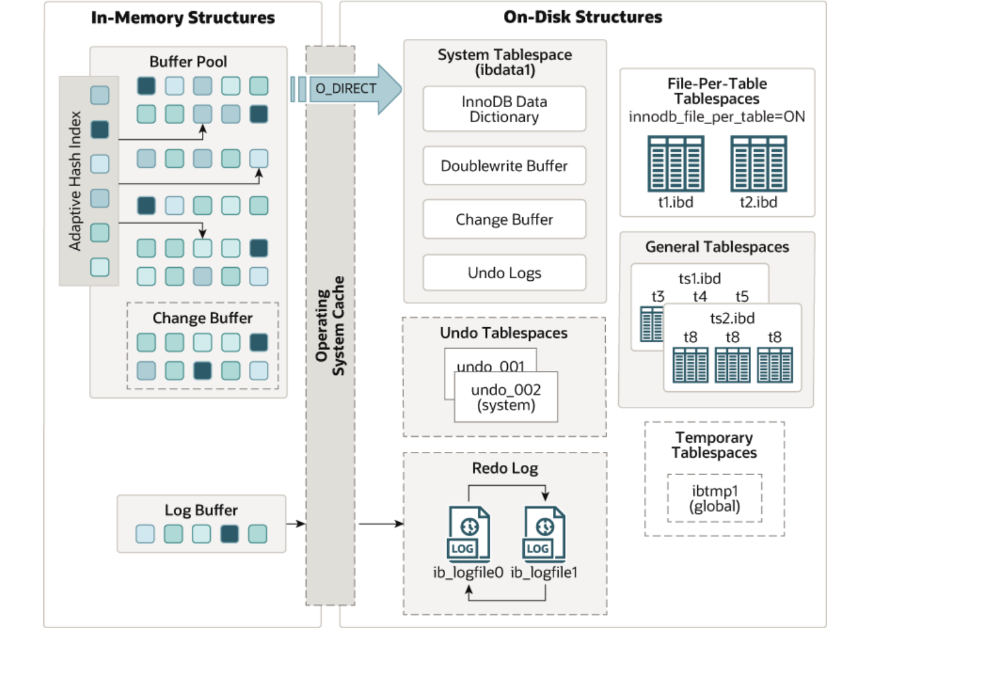
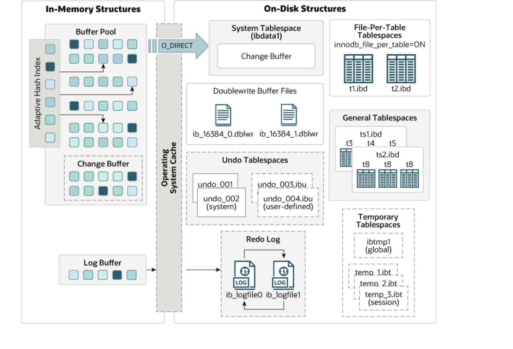

Innodb存储引擎¶
一、概述¶
什么是InnoDB？请看官网：Introduction to InnoDB
不晓得从什么时候开始InnoDB的版本号与MySQL的版本号保持一致了。通过变量innodb_version可以查看。
- mysql5.7
mysql> SHOW VARIABLES LIKE "innodb_version";
+----------------+--------+
| Variable_name | Value |
+----------------+--------+
| innodb_version | 5.7.37 |
+----------------+--------+
1 row in set (0.01 sec)
- mysql8.0
mysql> SHOW VARIABLES LIKE "innodb_version";
+----------------+--------+
| Variable_name | Value |
+----------------+--------+
| innodb_version | 8.0.32 |
+----------------+--------+
1 row in set (0.05 sec)
版本新增特性如下：
二、体系架构¶
1.InnoDB架构图¶
- 5.7版本架构图

- 8.0版本架构图

2.Innodb8.0版本新增功能¶
2.1 Doublewrite Buffer File¶
MySQL 8.0.20之前，双写缓冲区存储区域位于InnoDB系统表空间中。从MySQL 8.0.20开始，双写缓冲区存储区域位于双写文件中。将存储区域移出系统表空间可减少写入延迟、提高吞吐量，并为双写缓冲区页面的放置提供灵活性。为双写缓冲区配置提供以下变量：
定义双写缓冲区文件目录。
定义双写文件的数量。
定义批量写入的每个线程的最大双写页数。
定义批量写入的双写页数。
2.2 其他的以后遇到再说¶
3.缓冲池¶
缓冲池是主内存中的一个区域，它主要用于缓存数据库中的数据和索引，以减少直接从磁盘进行IO操作的次数，从而提高数据库的性能。在专用服务器上，高达 80% 的物理内存通常分配给缓冲池。
为了提高大容量读取操作的效率，缓冲池被划分为可以容纳多行的页面。为了提高缓存管理的效率，缓冲池被实现为页面的链表，使用LRU算法的变体，很少使用的数据会从缓存中老化。
3.1 LRU列表¶

3.1.1 具体实现¶
在InnoDB中，LRU算法加入了midlepoint位置，新读取的页不是放在首部，而是放在midlepoint位置。默认配置下该位置位于列表的5/8处，由参数innodb_old_blocks_pct控制。其值默认为37（大约为3/8），在InnoDB中将midlepoint之前的部分称为new列表，之后的部分称为old列表。
InnoDB还引入了另一个参数innodb_old_blocks_time，用来指定第一次访问页后的时间窗口（以毫秒为单位），在此期间可以访问该页而无需将其移动到 LRU 列表的前面（new列表末尾）。
3.1.2 原因¶
直接将读取的页放到LRU列表首部，那么某些SQL可能会使缓冲池中的页被淘汰。常见的这类操作为索引或数据的扫描操作。他们需要访问表中的很多页，而这些页通常仅在这次查询中使用，并不是热点数据，如果将其放在首部会导致真正的热点数据被淘汰，当再次读取该页时，需要从磁盘读取。
3.2 Free列表¶
数据库刚启动时，LRU列表是空的，这时页都在Free列表中。当需要缓冲池中分页时，首先从Free列表中查找是否有可用的空闲页，若有则将该页从Free列表中删除，放到LRU列表中。否则，根据LRU算法，淘汰LRU列表尾部的页，将内存空间分配给新的页。
3.3 Flush列表¶
当LRU列表中的页被修改后称为脏页，会将页放到Flush列表，需要注意的是脏页即存在于LRU列表，也存在与Flush列表。LRU列表用来管理缓冲池中页的可用性，Flush列表用来将脏页刷新回磁盘，二者互不影响。之后InnoDB会通过checkpoint机制将脏页刷新会磁盘。
3.4 Checkpoint机制¶
所谓的Checkpoint机制，是指一个触发点（时间点），当发生Checkpoint时，会将脏页（数据脏页和日志脏页）写回磁盘。
3.4.1 LSN¶
LSN（Log Sequence Number）是日志空间中每条日志的结束点，用字节偏移量来表示。在 InnoDB 存储引擎中，LSN 占8个字节，LSN 的值会随着日志的写入而逐渐变大。除了重做日志，每个页（在每个数据页的头部 FILE_HEADER 部分，有一个 FIL_PAGE_LSN 记录了该数据页最后被修改的日志序列位置）以及 Checkpoint 也会被分配一个LSN，以便在需要时可以按照顺序进行检索和恢复。即 Checkpoint 是通过LSN实现，其由一个 LSN 表示，用来记录已经刷回磁盘的最新页的版本。
mysql> show engine innodb status\G;
*************************** 1. row ***************************
Type: InnoDB
Name:
Status:
=====================================
2024-01-03 14:51:21 140393160079104 INNODB MONITOR OUTPUT
=====================================
Per second averages calculated from the last 32 seconds
---
LOG
---
Log sequence number 31820389
Log buffer assigned up to 31820389
Log buffer completed up to 31820389
Log written up to 31820389
Log flushed up to 31820389
Added dirty pages up to 31820389
Pages flushed up to 31820389
Last checkpoint at 31820389
Log minimum file id is 9
Log maximum file id is 9
32 log i/o's done, 0.00 log i/o's/second
3.4.2 Checkpoint作用¶
| 作用 | 说明 |
|---|---|
| 缩短数据库恢复时间 | 当数据库发生宕机时，数据库不需要重做所有的日志，因为Checkpoint之前的页都已经刷新回磁盘。故数据库只需对Checkpoint后的重做日志进行恢复。 |
| 缓冲池不够用时，刷新脏页到磁盘 | 当缓冲池不够用时，根据LRU算法会溢出最近最少使用的页，若此页为脏页，那么需要强制执行Checkpoint，将脏页也就是页的新版本刷回磁盘。 |
| 重做日志不可用时，刷新脏页 | 当重做日志循环使用时，发现重做日志还需要使用，那么必须强制产生Checkpoint，将缓冲池中的页至少刷新到当前重做日志的位置。 |
3.4.3 Checkpoint分类¶
在InnoDB存储引擎中，Checkpoint发生的时间、条件及脏页的选择等都非常复杂。而Checkpoint所做的事情无外乎是将缓冲池中的脏页刷回到磁盘。不同之处在于每次刷新多少页到磁盘，每次从哪里取脏页，以及什么时间触发Checkpoint。
在InnoDB存储引擎内部，有两Checkpoint，分别为：
- Sharp Checkpoint
Sharp Checkpoint 发送在数据库关闭时将所有的脏页都刷新回磁盘，这是默认的工作方式，即参数 innodb_fast_shutdown=1。
- Fuzzy Checkpoint
数据库运行时使用Fuzzy Checkpoint机制将所有一部分脏页刷新到磁盘。
| 触发时机 | 说明 |
|---|---|
| Master Thread Checkpoint | Master Thread每秒或每十秒刷新部分脏页到磁盘，此操作异步执行。 |
| FLUSH_LRU_LIST Checkpoint | Buffer Pool的LRU列表需要保留一定数量的空闲页面，来保证Buffer Pool中有足够的空间应对新的数据库请求。在空闲列表不足时，移除LRU列表尾端的页，若移除的页为脏页，则需要进行 Checkpoint。空闲数量阈值是可以配置的（默认是1024） |
| Async/Sync Flush Checkpoint | 当重做日志不可用（即 redo log 写满）时，需要强制将一些页刷新回磁盘，此时脏页从脏页列表中获取 |
| Dirty Page too much Checkpoint | 当脏页数量太多时会强制执行Checkpoint，以保证缓冲区有足够的空闲页。参数innodb_max_dirty_pages_pct控制，默认为75。 |